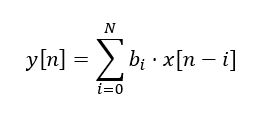

06 - Real-Time with SIMD¶
Introduction:¶
In this laboratory we wish to explore optimising designs using SMID instructions. We do this by getting you to implement a naïve implementation of a sound FIR-filter. As you should have completed the previous lab the task to master becomes one of streamlining data access.
This lab is marked and will score a maximum of 5 points. You have three lab sessions for this task (4.5 hours.)
Prerequisites¶
This lab requires additional software on the Ultra96 plattform and so you must install dependencies:
Directly install the dependencies (recommended)¶
Using bash:
sudo apt install alsa-utils portaudio19-dev libsndfile1-dev linux-tools-common valgrind libne10-dev
Offline Installation¶
If you have not setup Internet access on the u96-ultra you can attempt an offline installation. For this a script is provided. Important, this method can not ensure a functioning installation as dependencies may not be installed. If this happens the method above must be used.
Using bash
cd ./offline_install
chmod +x ./offline_install.sh
./offline_install.sh
Learning aims¶
Practical design using SIMD instructions
Typical real-world, real-time signal processing problem
Task¶
In the laboratory an audio file is read, filtered in the time domain to apply an echo effect, and stored in a new audio file. Students which have attended a digital signal processing class will know that there are better options to achieve this, but these methods are out of scope for this laboratory.
Introduction¶
In this application a FIR filter is used to change the sound as if it were recorded in another room, to do this the impulse response of the room is convoluted with the input sound. By changing the impulse response, the audio effect can be modified. The block diagram below illustrates the computational process. The weights b are the samples of the impulse response used, while x[n] represents the input samples. The delay line (represented by the z-1 elements) is essentially a FIFO buffer, in which the newest sample is x[n] and the oldest sample is x[n-m].

The process consists of multiplications and additions, and each output sample y[n] requires m+1 multiplications between input samples x and weights b, as well as m+1 additions.

FIR Filter Implementation¶
Audio file processing¶
In order to access audio files, the sound file library is used (available in the libsndfile1-dev package). All interaction with this library are provided with the base code.
Depending on the implementation the runtime of the program can be relatively long. It is recommended to limit the number of input samples to 100’000 samples using the #define LENGTH_LIMIT and use the ‘test_input.wav’.
The correct working of the filter can easily be checked by ear as wrong implementations tend to sound wrong and/or noisy. For the same reason it is advised to reverse the filter coefficients, in this way the effects of the lower-order coefficients are better taken into account.
Task 1: Data Preparation¶
When working with an application like this efficient data transport is required. Digital signal processors have hardware architectural constructs to move data efficiently from memory to registers and back again, including acceleration of multiply and accumulate (MAC) operations. In our processors we do not have this luxury and so must ensure that the SIMD instructions are efficiently fed with data by carefully considering the code.
Ensuring that data transport is efficient in code bears similarity to efficient programming in assembler. One starts at an instruction, a SIMD one in this case, and work backwards to make sure the data has the least possible number of formatting and alignment steps before being put into the operand register. As we work in loops the loops have a minimum number of instructions which makes the loops efficient and hence, hopefully, accelerate the computation time.
Further Hints:
You can use
#define FILTERSIZE_MODto ensure that the length of your filter is dividable by the chosen number.You can use
#define DELAYLINE_OVERSIZEto extend the size of your delay line beyond the filter size.During the data preparation phase, SIMD or OpenMP are not necessary as this phase only takes up a small fraction of the total runtime.
Task 2: FIR Filter¶
Implement your FIR filter in the filter_neon function. The given code frame already includes a variable for the delayline (float *reg) and the current sample position (uint32_t position) which you can use in your filter function. Your filter implementation should use both SIMD and OpenMP.
Hints:
To use SIMD and OpenMP in an efficient manner a nested loop can be advisable.
Evaluation¶
This laboratory is evaluated on the basis of the discussions with you on your code/solution. You can receive a maximum of 5 marks for this laboratory.
A perfect solution is good. An imperfect solution is acceptable. If your solution doesn’t work or is not particularly performant, then it an identification of the problems and mistakes made will be accepted for grading.
I welcome in-depth discussions on the contents of the lab and your solutions during the implementation process.
Appendix¶
References¶
https://libsndfile.github.io/libsndfile/
https://developer.arm.com/architectures/instruction-sets/simd-isas/neon/intrinsics